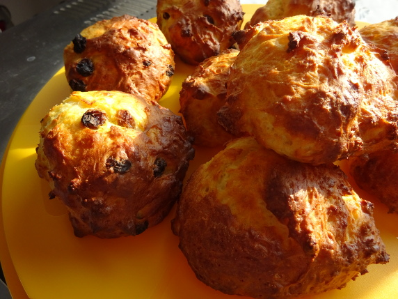

Süße Quarkbrötchen

- Zubereitung: ca. 15 Minuten
- Backen: ca. 20 Minuten
Zutaten
- 250 g Quark, Magerstufe
- 2 Eier
- 75 g Zucker
- 1 Pck. Vanillinzucker
- 1 Prise Salz
- 250 g Mehl
- 1 Pck. Backpulver
- 1 EL Kondensmilch
Zubereitung
- Quark, Eier, 50 g Zucker, Vanillinzucker und Salz mit den Schneebesen des Handrührgerätes verrühren. Mehl und Backpulver mischen. Erst mit den Schneebesen unter die Quarkmasse rühren, dann mit den Knethaken des Handrührgerätes zu einem glatten
Teig verkneten. Mit 2 Esslöffeln 9-12 Teighäufchen auf ein mit Backpapier ausgelegtes Backblech setzen.
- Im heißen Backofen bei 180°C ca. 15-20 Minuten backen. Brötchen ca. 3 Minuten vor Ende der Backzeit mit Kondensmilch bestreichen und mit dem Rest Zucker bestreuen. Brötchen herausnehmen, auskühlen lassen. Mit Butter und Marmelade oder Honig
servieren.
Quelle: http://www.chefkoch.de/rezepte/599111159601665/Suesse-Quarkbroetchen.html